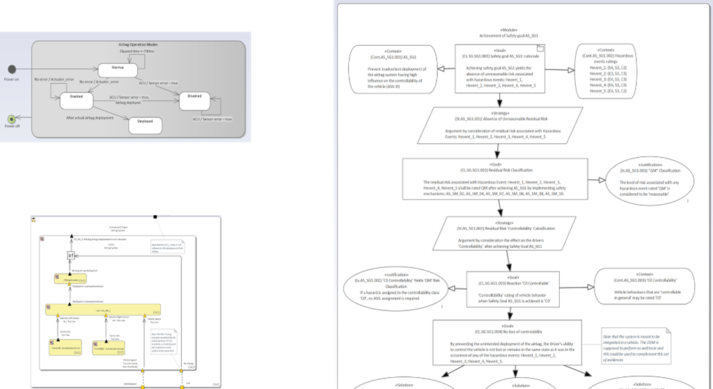
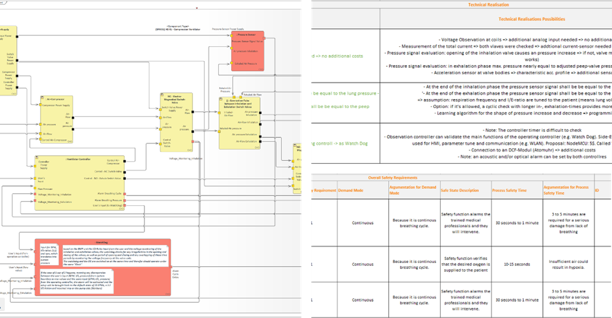
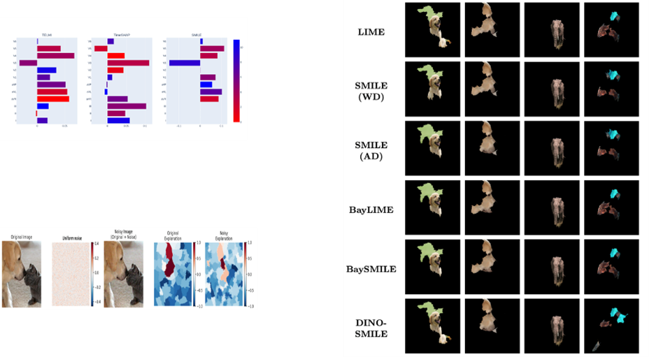

Functional Safety Projects
- Functional Safety engineering of Automotive
- Involved in several projects of functional safety engineering for automotive domain
- Hazard and Risk analysis, FMEA, Fault tree analysis, functional safety concept
- In accordance with ISO 26262
- For components such as braking, lightning system, steering system etc

- Functional safety of Ventilator
- Preliminary safety assessment of a ventilator design in accordance with IEC 61508:2010
- Using SafeTBox and Enterprise Architect
- Performed Hazard and risk analysis (HARA), minimal cut set of faults leading to failure using Component Fault trees (CFT), Safety requirements and Safety case

- Safety and Security co-engineering
- Unmanned Arial Vehicles (UAVs) safety assurance by reliability modeling
- Runtime reliability and risk assessment
- Using ConSerts to dynamically configure the system based on its state
- Executable Digital Dependable Identity (EDDI) concept
- Accounting security attacks and runtime detection of attacks such as DoS or Intrusion detection
- Collaborators: Dr. Koorosh Aslansefat, Dr. Panagiota Nikolaou

- Exploration of functional insufficiency of Automotive
- Extension of safety of functional safety standards for automotives to include safety of Intended functionality (SOTIF), ISO 21448
- Function robustness to input variation and unexpected behavior
- Performance of SOTIF activity: reduction of unknown hazardous scenarios
- Use of AI in accordance with ISO PAS 8800
- AI safety requirements generated based on ASIL rating criteria and acceptance criteria
- AI and functional safety engineering
- ISO functional safety and AI systems (ISO/IEC TR 5469) report, addressing the challenges of using AI in functional safety
- Applicability of IEC 61508, and requirements in addition to the methods suggested
- Methods from IEC 61508 directly applicable, based on the usage level of AI (from D to A1)
- Recommended safety engineering for AI in functional safety
- SafeAI in aviation
- Risk assessment using the ICAO Safety Management Manual Doc 9859
- Assumed availability of safety relevant incidents
- Exploration of European Union Aviation Agency (EASA) AI roadmap 2.0
- Exploration of EU AI ACT adoption and W-shaped learning assurance